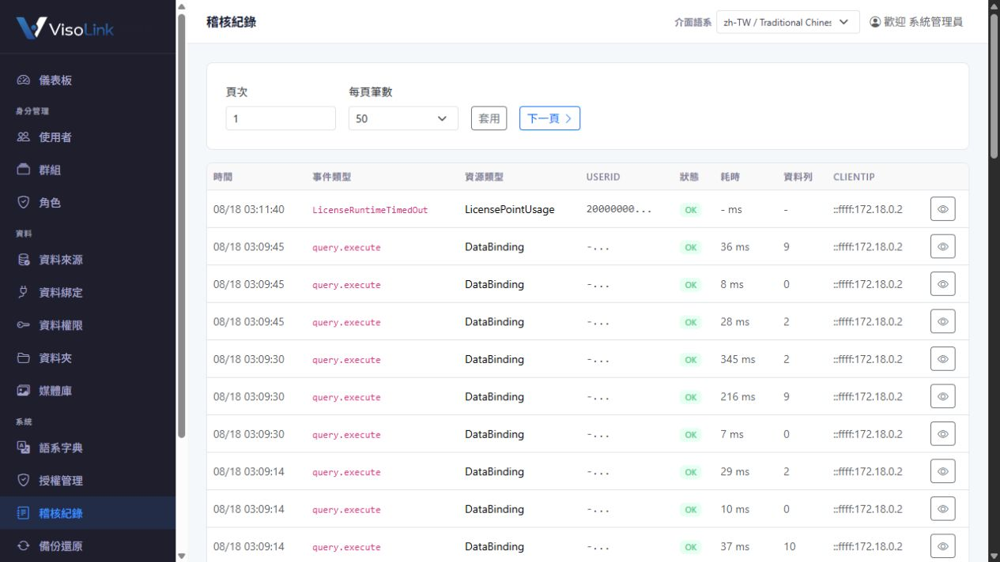

Audit Logs 稽核紀錄
稽核紀錄用於追蹤誰在何時對哪一類資源執行操作，以及是否成功。
瀏覽稽核紀錄

- 點選「系統 → 稽核紀錄」。
- 先檢查失敗事件與異常時間。
- 依事件及資源類型找到目標。
設定稽核分頁與筆數
- 輸入頁碼並選擇 Page Size。
- 點選 Apply。
- 使用較小頁面快速瀏覽，或提高筆數進行同批比對。
查看稽核詳細資料
- 點選目標事件的詳細資料。
- 確認 Event Type、Resource、User、時間與 Success。
- 查看事件內容但不要把敏感 Payload 複製到公開文件。
- 記錄事件識別，供問題追蹤。